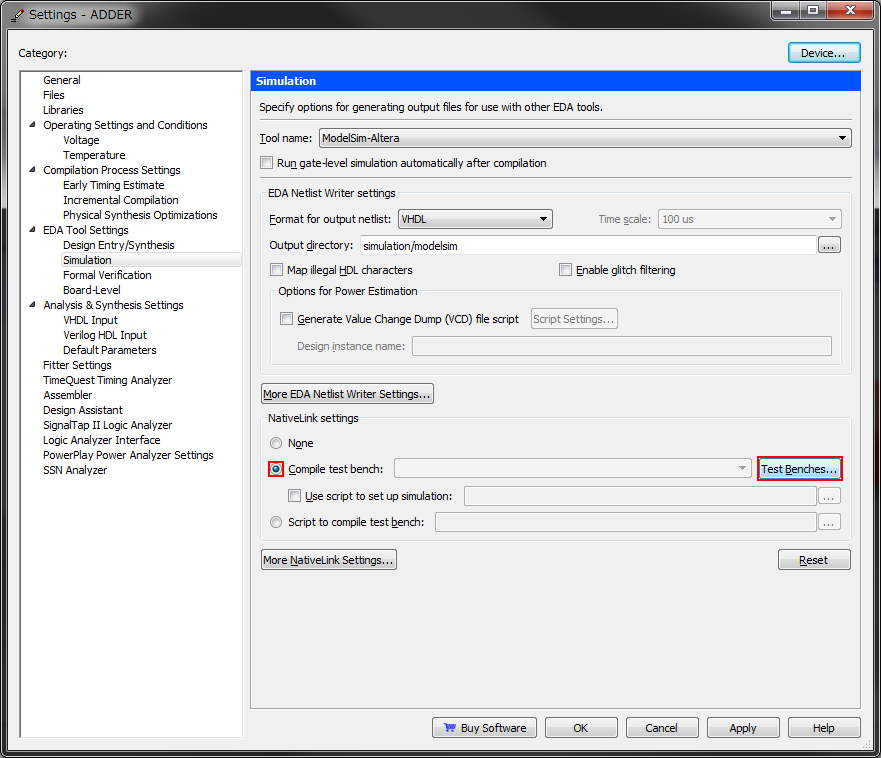
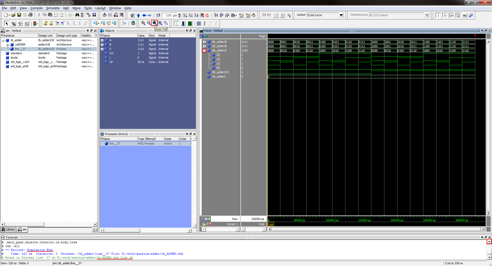
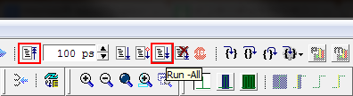

ModelSimの使用方法 - 加算器のRTLシミュレーション
はじめに
ここでは，Quartus IIを用いたFPGA開発の手順について解説していきます． 組合せ回路の基本である桁上げ伝搬加算器をVHDLで記述し，RTLシミュレーションで動作を確認した後にTerasic DE0に実装してみます． VHDLでの回路設計に関する解説は割愛しますが，記述例を掲載しますのでご覧ください． FPGA開発ボードが手元になくても，RTLシミュレーションでHDL記述の動作を確認できるので，HDLの勉強の参考にもなるのではないでしょうか．
加算器の作成では，Quartus IIのプロジェクト作成から加算器の記述までについて解説しました． 本ページでは，Quartus IIとModelSimの連携と，ModelSimを用いたRTLシミュレーションの実行について書いてみたいと思います．
以降で掲載するスクリーンショットは下記の環境のものです． Quartus IIのインストール方法についてはこちらを， ModelSimのインストール方法についてはこちらをご覧ください．
| OS | Microsoft Windows 7 Professional x64 Service Pack 1 |
|---|---|
| Quartus II | Altera Quartus II 12.0sp2 Web Edition |
| ModelSim | Mentor Graphics ModelSim-Altera Starter Edition v10.0d Service Pack 2 |
VHDLによるテストベンチ記述
テストベンチを記述するファイルを新規作成します．左上の「File」から「New...」を選択します．
{kind=link}
ウィンドウが開くので，VHDLで記述する場合は「VHDL File」を，Verilog-HDLで記述する場合は「Verilog HDL File」を選択します．
{kind=link}
HDLでテストベンチを記述します． 本ページはQuartus IIの使用方法の解説を主な目的としていますので，テストベンチ記述に関する解説は省略します． VHDLによる4bit桁上げ伝搬加算器向けのテストベンチの記述例を掲載しますので，参考にしてください．
以下は，テストベンチの記述例（tb_ADDER.vhd）です．テストベンチの最上位エンティティ名は「tb_ADDER」としました．
library IEEE;
use IEEE.std_logic_1164.all;
use IEEE.std_logic_arith.all;
entity tb_ADDER is
end tb_ADDER;
architecture rtl of tb_ADDER is
signal A: std_logic_vector(3 downto 0);
signal B: std_logic_vector(3 downto 0);
--signal CI: std_logic;
signal S: std_logic_vector(3 downto 0);
signal CO: std_logic;
signal i: integer range 0 to 15;
-- global clock period
constant CP: time := 20 ns;
component ADDER port(
A: in std_logic_vector(3 downto 0);
B: in std_logic_vector(3 downto 0);
CI: in std_logic;
S: out std_logic_vector(3 downto 0);
CO: out std_logic);
end component;
begin
uADDER: ADDER port map(
A => A,
B => B,
CI => '0',
S => S,
CO => CO);
process begin
A <= "0000"; B <= "0000";
for i in 0 to 15 loop
A <= CONV_std_logic_vector(i, 4);
B <= CONV_std_logic_vector(i, 4);
wait for CP;
end loop;
assert false report "Simulation End." severity failure;
end process;
end rtl;
テストベンチ記述もコンパイルで文法チェックができます． エラーがある場合は，該当箇所を修正して，エラーが消えるまでコンパイルを繰り返しましょう．

シミュレーションのための設定
ModelSimでシミュレーションを実行するために，Quartus II上でプロジェクトの設定を変更します． Quartus IIのウィンドウ左側のエンティティ一覧に表示されているのデバイス名を右クリックし，「Settings...」を選択します．

開いたウィンドウ左側のカテゴリ一覧から「EDA Tool Settings」の「Simulation」を選択します． 次に，Simulationの「NativeLink settings」の項目の「Compile test bench:」横のラジオボタンを選択し，「Test Benches...」を選択します．
{kind=link}
「Test Benches」ウィンドウが開くので，「New...」を選択します．
{kind=link}
「New Test Bench Settings」ウィンドウが開くので， 「Test bench and simulation files」の項目の「File name:」のテキストボックス右横の「...」ボタンを選択します．
{kind=link}
「Select File」ウィンドウが開くので，先に記述したテストベンチファイルを選択し，「Open」します．
{kind=link}
「New Test Bench Settings」に戻り，任意の「Test bench name」と， 「Top level module in test bench」に選択したテストベンチファイルの最上位エンティティ名を入力します． ここでは「tb_ADDER」としました．入力後「OK」を選択します．
{kind=link}
「Test Benches」ウィンドウで入力内容を確認した後，「OK」を選択します． 「Settings」ウィンドウも閉じてください．以上で設定は終了です．
{kind=link}
RTLシミュレーションの開始
下図のボタンを選択して，RTLシミュレーションを開始します． 自動的にModelSimが起動します．
{kind=link}
下図のようなメッセージが表示される場合は，ModelSim関連のインストールや設定に問題がある可能性があります．

正常にQuartus IIとModelSimのインストール・連携設定が完了していれば， ModelSimのスプラッシュ画面が表示されるはずです．
{kind=link}
シミュレーションの実行
ModelSimが起動すると，テストベンチ記述に問題がなければ，シミュレーションも自動的に開始されます． Quartus IIで正しく設定を行っておけば，ModelSim上で設定を変更したりコマンドを入力したりする必要はないようです． 「Transcript」ウィンドウでは，自動的にコマンドが流れていきます．
{kind=link}
数秒で自動的に下図のようなウィンドウに遷移します．既にシミュレーションは終了しています．
Transcriptウィンドウを上方向にスクロールして履歴を見ると， 上のテストベンチ記述例の46行目でシミュレーションが終了し，「Simulation End.」と出力されていることが確認できます．
シミュレーション終了直後は波形の一部のみが「Wave」ウィンドウに表示されていると思いますが，波形は任意の倍率に拡大・縮小およびスクロールできます． 一度Waveウィンドウを選択するとズーム機能のアイコンが有効になるので，適宜使用してください． 「Zoom Full」を使えば，Waveウィンドウの大きさにフィットする倍率で波形全体が表示されます． また，2bit以上のbit幅がある信号線は集約されていますが，信号線名の左横の十字マークを選択すると展開表示できます．
{kind=link}
標準では2進数で数値が表示されていますが，この数値の基数を変更することも可能です． 信号線名の上で右クリックし，16進数で表示したい場合は下図のように選択します． 2進数，8進数，10進数，16進数の他にも，数値をアスキーコードとして扱い，文字として表示することも可能です．
{kind=link}
最上位エンティティの入出力信号線だけではなく，下位のエンティティの波形も確認できます． 各エンティティをWaveウィンドウに追加する場合は，下図のように操作します． 「sim」ウィンドウで任意の箇所を右クリックし，「Add」，「To Wave」を選択します． 「To Wave」以下のメニューでは，必要に応じて選択項目を決めてください．

Waveウィンドウに新しい表示対象を追加しても，一部の波形が表示されない場合があります． その場合は，下図左の「Restart」ボタンを選択した後， 下図右の「Run -All」ボタンを選択してシミュレーションを再実行しましょう． 「Restart」を選択せずに「Run -All」を選択すると， シミュレーションの再実行結果の波形は，以前の実行結果の直後に挿入されますので注意してください．
{kind=link}
「Restart」を実行すると下図のようなウィンドウが表示されますが，通常はデフォルトのままで「OK」です．
{kind=link}
「Run -All」を実行すると，Waveウィンドウが表示されていた領域にテストベンチ記述が表示される場合があります． この時は，ウィンドウ下部のタブでWaveウィンドウに切り替えてください．
テストベンチ記述を変更してシミュレーションを再実行したい場合は， ModelSimを一度終了し，Quartus上から再度ModelSimを起動しましょう．
波形を繰り返し確認して，記述した加算器が意図通りに動作しているかどうか，仕様を満たしているかどうかを確認してください．
シミュレーション結果（波形）を画像として保存する
「File」，「Export」，「Image...」から，波形をビットマップ形式の画像ファイルとして出力・保存できます．
{kind=link}
次のステップ: Quartus IIの使用方法 - 加算器のFPGA実装
Quartus IIの使用方法 - 加算器のFPGA実装では， 加算器のFPGA実装に向けたピン配置などの設定と，プログラム方法について解説します． よろしければご覧ください．